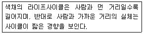
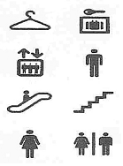
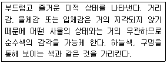
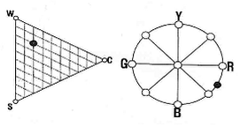
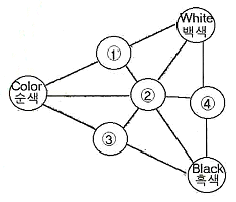

컬러리스트산업기사 (2007-08-05 기출문제)
1과목: 색채심리
1. 색채의 공감각에 대한 설명으로 틀린 것은?
- pale tone의 빨강을 보면 날카로운 음이 느껴진다.
- dull tone의 빨강에서는 맑지 않은 음색이 느껴진다.
- vivid tone의 빨강을 보면 시끄러운 음색이 느껴진다.
- dark tone의 빨강에선 무겁고 중후한 음색이 느껴진다.
(정답률: 알수없음)

2. TV 리모콘 콘트롤러의 효과적인 색채계획시 가장 고려해야할 것은?
- 기능정보
- 보편적 색채
- 상징적 의미
- 선호색
(정답률: 알수없음)
3. 서양에서 흰색은 순결한 신부를 상징하나, 동양에서 흰색은 장례식에 사용되는 경우가 많다. 이는 무엇을 설명하는 것인가?
- 국제적인 메시지
- 시대와 문화에 대한 차이
- 기능적인 색채 계획
- 연대적 정보체계
(정답률: 알수없음)
4. 귀여운 이미지의 유 비틀(New Beetle) 자동차에 노란색을 적용하는 것은 무엇을 의미하는가?
- 지역적 특성을 반영한 색채
- 라이프스타일을 반영한 선호색채
- 사회적 특성을 고려한 표준색
- 상징적인 의미의 색
(정답률: 알수없음)
5. 다음 중 자극이 강하고 화려한 느낌을 주는 배색 방법은?
- 동일 색상의 배색
- 유사 색상의 배색
- 보색 색상의 배색
- 인접 색상의 배색
(정답률: 알수없음)
6. 다음 색채와 연상언어의 연결이 잘못된 것은?
- 노란색 - 위험, 혁명, 환희
- 녹색 - 안정, 평화, 지성
- 파란색 - 명상, 냉정, 영원
- 보라색 - 창조, 우아, 신비
(정답률: 알수없음)
7. 배색시 그 관계가 애매하거나 대비가 너무 강한 경우의 해결방법과 관련이 없는 것은?
- 고명도 ㆍ 고채도의 유채색을 주로 삽입
- 슈브롤의 조화 이론을 기본으로 한 배색방법
- 성당의 스테인드글래스의 예
- 분리효과에 의한 배색
(정답률: 알수없음)
8. 다음 중 한국에서 초록이 쉽게 연상되는 계절은?
- 봄
- 여름
- 가을
- 겨울
(정답률: 알수없음)
9. SD법을 활용한 색채 이미지 조사법의 장점이 아닌 것은?
- 색채 감성의 객관적 척도이다.
- 단색체계에 대한 상대적인 비교 평가가 가능하다.
- 문화적인 차이를 잘 보여준다.
- 색채 기회나 디자인 과정에서 이미지의 위치를 찾을 수 있다.
(정답률: 알수없음)
10. 같은 회색을 검정바탕과 흰색바탕에 위치시키게 될 때, 우리 눈에 지각되는 회색이 달리 보이게 되는 효과는?
- 색상대비
- 채도대비
- 명도대비
- 면적대비
(정답률: 알수없음)
11. 올림픽의 오륜마크에서 사용되는 색채는?
- 기억색
- 지역색
- 상징색
- 고유색
(정답률: 알수없음)
12. 불특정 다수의 사람들이 거주하는 생활공간의 사무소, 도서관과 같은 건축공간의 색채조절로 부적합한 것은?
- 친숙한 색채환경을 만들어 이용자가 깊은 애착을 가지게 한다.
- 작업원의 원기를 높이고 작업의욕을 증진시킬 수 있도록 고려한다.
- 시야 내에는 색채자극을 최소화하도록 색채사용을 억제한다.
- 조도와 온도감, 습도, 방의 크기 같은 물리적 환경조건의 단점을 보완한다.
(정답률: 알수없음)
13. 단조로운 배색에 대조색을 조금 추가하여 전체 상태를 돋보이도록 구성하는 방법은?
- 반복보색 효과
- 강조배색 효과
- 톤배색 효과
- 연속배색 효과
(정답률: 알수없음)
14. 색채의 감정효과에 관한 설명 중 옳은 것은?
- 녹색, 보라 등은 따뜻함이나 차가움이 느껴지지 않는 중성색이다.
- 채도가 높은 색은 부드러운 느낌을 준다.
- 색에 의한 흥분, 진정효과는 명도에 가장 크게 좌우 된다.
- 색의 중량감을 색상에 가장 크게 좌우된다.
(정답률: 알수없음)
15. 색채의 온도감을 규정짓는 요소 중 가장 중요한 것은?
- 회화적 환경
- 이미지
- 문화
- 파장
(정답률: 알수없음)
16. 다음 배색 중에서 주조색과 보조색이 유사색 배색이고, 여기에 강한 액센트를 주기 위해서 주조색과 대조되는 색으로 강조색을 사용한 것은?
- 노란색 상의에 베이지색 하의를 입고 짙은 파란색 벨트를 사용하였다.
- 회색 벽지에 천연 나무색 바닥재를 깔고 검정색 가구를 배치하였다.
- 어두운 빨간색 상의에 어두운 파란색 하의를 입고 선명한 노란색 벨트를 착용하였다.
- 엷은 하늘색 벽지에 밝은 노란색 바닥재를 깔고 천연 나무색 가구를 배치하였다.
(정답률: 알수없음)
17. 다음 설명 중 맞는 것은?
- 북구계 민족은 한색계를 선호한다.
- 생후 3개월부터 원색을 구별할 수 있다.
- 라틴계 민족은 중성색과 무채색을 선호한다.
- 지적 능력이 높은 사람은 붉은 색을 선호한다.
(정답률: 알수없음)
18. 다음 중 진정 효과가 크며 호흡수와 혈압, 근육 긴장을 감소시키는 색채는?
- 노랑
- 녹색
- 파랑
- 갈색
(정답률: 알수없음)
19. 색의 촉감에서 분홍색, 살구색, 연두색 등을 부드럽고 평온하며 유연한 느낌을 줄 수 있도록 하기 위해 가미할 색으로 적절한 것은?
- 검은색
- 흰색
- 빨간색
- 파란색
(정답률: 알수없음)
20. 색채조절을 잘못 설명한 것은?
- 색채의 심리적 효과에 활용된다.
- 색채의 생리적 효과에 활용된다.
- 개인적인 선호에 이해 건물, 설비, 집기 등에 색을 사용한다.
- 안전하고 효율적인 작업환경과 쾌적한 생활환경의 조성을 목적으로 한다.
(정답률: 알수없음)
2과목: 색채디자인
21. 다음 중 환경 디자인 영역과 거리가 먼 것은?
- 실내 디자인
- 디스플레이 디자인
- 건축 디자인
- 패키지 디자인
(정답률: 알수없음)
22. 다음 색채 기호에 대한 설명 중 잘못된 것은?
- 색채에 대한 기호는 문화적인 요인과 인성적인 요인이 혼합되어 나타난다.
- 기업이 시장의 요구에 응하기 위해서는 색채의 선택 범위가 넓을수록 좋다.
- 현대에 오면서 색채에 대한 요구나 만족도는 일정한 방향으로 흐른다.
- 자신의 감성을 억제하는 사람은 청색, 녹색을 좋아하고 적색을 싫어하는 경향이 있다.
(정답률: 알수없음)
23. 인간의 의사 소통에 필요한 청각적, 시각적, 시청각적, 동작적 전언(Message)에 속하지 않는 것은?
- 지표(index)
- 신호(signal)
- 아이콘(icon)
- 컨셉(concept)
(정답률: 알수없음)
24. 기업 이미지 통합계획의 구성요소가 아닌 것은?
- M.I (Mind Identity)
- V.I (Visual Identity)
- B.I (Brand Identity)
- A.I (Action Identity)
(정답률: 알수없음)
25. 브랜드 관리 과정이 바르게 나열된 것은?
- 브랜드 설정 - 브랜드 파워 - 브랜드 이미지 구축 - 브랜드 충성도 확립
- 브랜드 설정 - 브랜드 이미지 구축 - 브랜드 충성도 확립 - 브랜드 확립
- 브랜드 이미지 구축 - 브랜드 파워 - 브랜드 설정 - 브랜드 충성도 확립
- 브랜드 이미지 구축 - 브랜드 충성도 확립 - 브랜드 파워 - 브랜드 설정
(정답률: 알수없음)
26. 다음 중 '디자인'이라는 용어의 어원과 거리가 먼 것은?
- 데셍(dessein)
- 디세뇨오(disegno)
- 드로잉(drawing)
- 데지그나레(designare)
(정답률: 알수없음)
27. 디자인의 요소인 문화성의 비중이 높아지고 있는 원인으로 볼 수 없는 것은?
- 세계화
- 국제화
- 합리화
- 지역화
(정답률: 알수없음)
28. 동영상과 사운드, 전시장이나 공항 등의 안내시스템, 인터넷을 통한 사이버 강의 등 다양한 분야에서 활용 되고 있는 디자인은?
- 일러스트레이션
- 멀티미디어 디자인
- 에디토리얼 디자인
- 아이덴티티 디자인
(정답률: 알수없음)
29. 현대 산업사회의 특징인 대중문화 속에 등장하는 이미지를 수용한 사조로, 개방과 비개성으로 특징지어지는 것은?
- 팝 아트(Pop Art)
- 옵 아트(Op Art)
- 아방가르드(Avant-garde)
- 미래주의(Futurism)
(정답률: 알수없음)
30. 산업화 과정의 부산물인 생태계 파괴가 인류를 위협 하는 상황에서 현대 디자인이 염두에 두어야 할 요소는?
- 세계화
- 통일성
- 고유문화
- 친자연성
(정답률: 알수없음)
31. 단순한 기하학적 형태를 사용하며 이미지와 조형요소를 최소화하여 기본적인 구조로 환원시키고, 원형이나 정육면체 등의 단일 입방체 사용과 단색 사용 등으로 단순함을 강조한 것은?
- 팝아트
- 옵아트
- 미니멀리즘
- 포스트모더니즘
(정답률: 알수없음)
32. '주택은 인간이 들어가서 살기 위한 기계이다'라고 말한 사람은?
- 월터 그로피우스(Walter Gropius)
- 르 꼬르비지에(Le Corbusier)
- 안토니 가우디(Anthony Gaudi)
- 프랭크 로이드 라이트(Frank Lloyd Wright)
(정답률: 알수없음)
33. 색채 시장조사과정에서 동종시장의 타제품과의 상대적 위치를 파악함으로써 전반적인 시장에서의 자사의 위치를 파악하고 새로운 제품기회를 포착할 수 있도록 도와주는 마케팅 기법은?
- 제품 사용성 평가(usability test)
- 스트리트 워칭(street watching)
- 표적 마케팅(market targeting)
- 제품 포지셔닝(product positioning)
(정답률: 알수없음)
34. 두 쌍의 형용사를 축으로 하는 직교 좌표계 속에 나타난 색의 분포를 통해 그 특성을 분석하는 방법은?
- 좌표 분석법
- 이미지 스케일법
- 의미 미분법
- 선호도 추출법
(정답률: 알수없음)
35. 색채 이미지는 색의 삼속성과 관련이 높다. 특히 명도와 채도의 복합 개념으로 다양한 이미지를 전달하는 것은?

- 색상
- 분위기
- 색조
- 배색
(정답률: 알수없음)
36. 목적과 대상에 따른 색채계획 실무 중 아래의 내용과 같은 특징을 갖는 것은?
- 주거공간의 색채
- 개인의 색채
- 제품의 색채
- 도시공간의 색채
(정답률: 알수없음)
37. 그림언어라고 불리는 다음의 그림을 무엇이라 하는가?

- Symbol
- Pictogram
- Sign
- ISOTYPE
(정답률: 알수없음)
38. 디자인에서 대상을 연속적으로 전개시켜 이미지를 만드는 요소는?
- 비례
- 균형
- 리듬
- 구도
(정답률: 알수없음)
39. 일본 디자인의 대표적인 특징이 아닌 것은?
- 축소조의
- 간결성
- 장식성
- 기능성
(정답률: 알수없음)
40. 석판 인쇄술 발명 이후 초기 포스터 시대의 대표적 포스터 작가가 아닌 사람은?
- 쉐레(Cheret)
- 스텐렌(Steinlen)
- 칸딘스키(Kandinsky)
- 로트렉(Rautrec)
(정답률: 알수없음)
3과목: 섹채관리
41. 모니터의 색온도에 관한 설명으로 맞는 것은?
- 6500K로 설정된 모니터의 화면은 청색조를 띄게 된다.
- 모니터의 색온도는 출고시 대부분 6500K으로 설정 된다.
- 모니터의 색온도는 6500K와 7600K, 9300K의 세 종류 중에서 선택할 수 있다.
- 자연에 가까운 색을 구현하기 위해서는 색온도를 6500K로 설정하는 것이 좋다.
(정답률: 알수없음)
42. 모든 분야에서 가장 일반적으로 물체의 색을 나타내는데 사용되는 표색계는?
- L*a*b* 표색계
- Hunter Lab 표색계
- (x,y) 색도계
- XYZ 표색계
(정답률: 알수없음)
43. 페놀탈레인과 가장 관련된 것은?
- 형광색재
- 음식색료
- 쳔연염료
- 금속성색재
(정답률: 알수없음)
44. 클로로필 색소에 대한 설명으로 옳은 것은?
- 크로커스 꽃가루에서 얻어진다.
- 중앙에 마그네슘 원자를 갖고 있다.
- 중앙에 구리 금속을 가지고 있다.
- 흡수가 오렌지와 노란색에서 강하게 일어난다.
(정답률: 알수없음)
45. 다음 중 육안조색과 가장 관계가 없는 것은?
- 인간의 눈을 기준으로 조색하므로 오차가 심하고 정밀도도 떨어진다.
- 메타메리즘이 발생할 수 있다.
- 기기의 도움 없이 소재의 제약을 받지 않고 조색할 수 있다.
- 정확한 양으로 조색하고 최소의 컬러런트로 조색하여 원가가 절감된다.
(정답률: 알수없음)
46. 디스플레이의 일종으로 자기발광성이 없어 후광이 필요하지만 동작 전압이 낮아 소비전력이 적고 휴대용으로 쓰일 수 있어 손목시계, 컴퓨터 등에 널리 쓰이고 있는 것은?
- LCD(Liquid Cryatal Display)
- CRTD(Cathode-Ray Tube Display)
- CRT - Trinitron
- CCD(Charge Coupled Device)
(정답률: 알수없음)
47. 디지털 색채와 관련된 다음 설명 중 맞는 것은?
- 픽셀(pixel)의 물리적 크기는 선택된 해상도에 따라 변하는 것은 아니다.
- 10ppi는 1인치당 10개의 픽셀(pixel)을 가짐을 뜻한다.
- 이미지가 디지털로 1비트의 깊이로 스캔되면, 혹과 백외에 1가지의 회색톤을 더 가질 수 있다.
- 해상도는 데이터의 전체 용량과는 직접적인 관계가 없다.
(정답률: 알수없음)
48. 색채 영상의 입력에 활용되는 디바이스인 디지털 카메라, 스캐너 등의 가장 기본이 되는 요소는?
- CCD(Charge coupled device)
- CRT(cathode ray tube)
- LCD(liquid crystal display)
- DTP(desk top publishing)
(정답률: 알수없음)
49. CCM(Computer Color Matching)을 도입하는 목적과 장점이 아닌 것은?
- 일정한 품질을 생산할 수 있다.
- 컬러런트 구성이 효율적이다.
- 메타메리즘 예측이 가능하다.
- 숙련자만이 관리할 수 있다.
(정답률: 알수없음)
50. CIELAB에서의 색좌표 b*가 -쪽이면 어떤 색을 나타내는가?
- 파랑
- 노랑
- 녹색
- 빨강
(정답률: 알수없음)
51. 한국산업규격 중 물체색의 색이름과 관련된 것은?
- KS A 0011
- KS A 0062
- KS A 3012
- KS A 8008
(정답률: 알수없음)
52. 필터식 방식이나 분광식 방식의 모든 색채계에 색채측정의 기준으로 사용되는 것은?
- 백색기준물
- 회색기준물
- 녹색기준물
- 적색기준물
(정답률: 알수없음)
53. 다음 중 안료와 염료의 구분이 올바른 것은?
- 고착제를 사용하면 안료이고, 사용하지 않으면 염료 이다.
- 수용성이 있으면 안료이고, 없으면 염료이다.
- 투명도가 높으면 안료이고, 낮으면 염료이다.
- 무기물이면 염료이고, 유기물이면 안료이다.
(정답률: 알수없음)
54. 다음 중 효율적인 염색 방법에 대한 조건이 아닌 것은?
- 염료가 잘 용해되어야 한다.
- 분말의 염료에 먼지가 없어야 한다.
- 액체용액을 오랜 기간 저장해도 변하지 않아야 한다.
- 흡착력이 높지 않아야 한다.
(정답률: 알수없음)
55. 다음 중 분광식 색채계의 구성요고가 어닌 것은?
- 시료대
- 삼자극치 필터
- 광검출기
- 분광장치
(정답률: 알수없음)
56. 동일 조건으로 조명하여 한정된 동일 입체각 내에 물체에서 반사하는 방사속(광속)과 완전 확산 반사면에서 반사하는 방사속(광속)의 비는?
- 입체각 휘도율
- 방사 휘도율
- 방사 반사율
- 입체각 반사율
(정답률: 알수없음)
57. 물체의 색을 측정하는 방법으로 CIE가 추천한 것이 아닌 것은?
- 45/0
- 0/45
- d/45
- d/0
(정답률: 알수없음)
58. 색채 관측시, 동일한 색이 주변색채나 조명광원 등에 의해 다르게 인식되는 현상은?
- 컬러 매칭(color matching)
- 컬러 어피어런스(color appearance)
- 푸르킨예 현상(purkinje phenomenon)
- 메타메리즘(metamerism)
(정답률: 알수없음)
59. 다음의 용어들을 설명한 것 중 틀린 것은?
- dpi - 인치당 점의 수
- lpi - 인치당 선의 수
- spi - 인치당 샘플의 수
- ppi - 인치당 핀의 수
(정답률: 알수없음)
60. 색역(Gamut)이 넓은 순으로 맞는 것은?
- CIELAB ＞ CMYK ＞ RGB
- RGB ＞ CIELAB ＞ CMYK
- CIELAB ＞ RGB ＞ CMYK
- CMYK ＞ RGB ＞ CIELA
(정답률: 알수없음)
4과목: 색채지각의이해
61. 다음 색에 관한 설명 중 맞는 것은?
- 색의 밝기를 채도라 한다.
- 색의 순도를 명도라 한다.
- 인간은 약 200개의 색을 변별할 수 있다.
- 유사한 색끼리 근접하여 배열한 원을 색상환이라 한다.
(정답률: 알수없음)
62. 인간이 광원이나 외부대상의 색을 알아내는 과정을 무엇이라 하는가?
- 색채순응
- 색채지각
- 색채반응
- 색각현상
(정답률: 알수없음)
63. 가산혼합에 대한 설명으로 틀린 것은?
- 모든 색을 같은 양으로 혼합하면 검정색이 된다.
- 빛의 혼합으로 빛의 삼원색은 적색, 녹색, 청색이다.
- 빛을 가하여 색을 혼합하는 방법으로 원래의 색보다 명도가 높아진다.
- 적색과 녹색 빛을 동시에 가하면 노란 빛이 된다.
(정답률: 알수없음)
64. 동시대비의 설명 중 틀린 것은?
- 색차가 클수록 대비현상이 강해진다.
- 자극과 자극 사이에 거리가 멀어질수록 대비현상은 약해진다.
- 자극을 부여하는 크기가 클수록 대비의 효과가 커진다.
- 시점을 한 곳에 집중시키려는 색채지각 과정에서 일어나는 현상이다.
(정답률: 알수없음)
65. 무대조명과 같이 두 개 이상의 스펙트럼을 동시에 겹쳐 합성된 결과를 얻는 혼색방법은?
- 동시병치혼합
- 동시계시혼색
- 동시감법혼색
- 동시가법혼색
(정답률: 알수없음)
66. 색의 진출에 관한 설명 중 잘못된 것은?
- 따뜻한 색보다 차가운 색이 더 진출하는 느낌을 준다.
- 어두운 색보다 밝은 색이 더 진출하는 느낌을 준다.
- 채도가 낮은 색보다 채도가 높은 색이 더 진출하는 느낌을 준다.
- 무채색보다 유채색이 더 진출하는 느낌을 준다.
(정답률: 알수없음)
67. 망막상에서 상의 초점이 맺히는 부분은?
- 중심와
- 맹점
- 시신경
- 광수용기
(정답률: 알수없음)
68. 정상적인 눈의 경우 추상체(원뿔세포)는 빛의 파장에 따라 다른 반응을 보이는 몇 개의 추상체로 나뉘는가?
- 1가지
- 2가지
- 3가지
- 4가지
(정답률: 알수없음)
69. 다음 색 중 가장 차갑게 느껴지는 색상은?
- 빨강
- 주황
- 노랑
- 파랑
(정답률: 알수없음)
70. 다음 중 적절한 색채 적용이 아닌 것은?
- 여름에는 파란색 계통의 커튼이나 침구로 교체하는 것이 심리적으로 방을 시원해 보이게 한다.
- 수험생의 방은 밝고 채도가 높은 벽지나 커튼을 사용하여 기분이 우울하지 않도록 돕는다.
- 뚱뚱한 사람은 청회색같은 차갑고 명도가 낮은 색을 입는 것이 효과적이다.
- 위험한 기계 등을 주의시킬 때는 주의 조심의 표시로 주황색을 사용한다.
(정답률: 알수없음)
71. 조명에 의하여 물체의 색을 결정하는 광원의 성질은?
- 분광반사
- 연색성
- 조건등색
- 스펙트럼
(정답률: 알수없음)
72. 다음 내용 중 서로 연관성이 없는 것은?
- 흡수효과
- 줄눈효과
- 전파효과
- 동화효과
(정답률: 알수없음)
73. 보색에 대한 설명 중에서 틀린 것은?
- 색상환에서 모든 2차색은 그 색에 포함되지 않은 원색과 보색관계에 있다.
- 보색 중에서 회전혼색의 결과 무채색이 되는 보색을 특히 심리보색이라고 한다.
- 보색관계에 있는 두 색광의 혼합결과는 백색광이 된다.
- 색상환에서 보색이 되는 두 색간에는 보색대비 효과가 나타난다.
(정답률: 알수없음)
74. 다음 중 색채의 경연감에 대한 설명으로 맞는 것은?
- 따뜻하고 차게 느껴지는 시각의 감각현상이다.
- 고채도일수록 약하게, 저채도일수록 강하게 느껴진다.
- 고명도일수록 가볍게, 저명도일수록 무겁게 느껴진다.
- 연한 톤은 부드럽게, 진한 톤은 딱딱하게 느껴진다.
(정답률: 알수없음)
75. 면적대비에 대한 설명 중 옳은 것은?
- 면적 대비에서 순색은 작은 면적보다 튼 면적 쪽에 사용하는 것이 훨씬 효과적이다.
- 강렬한 색상은 큰 면적에, 회색 느낌의 색상을 작은 면적으로 하면 효과적이다.
- 강렬한 색채가 큰 면적으로 차지하면 눈이 피로해지므로 채도가 낮은 색을 사용하여 눈을 보호한다.
- 큰 면적보다 작은 면적 쪽의 색채가 훨씬 강렬하게 보인다.
(정답률: 알수없음)
76. 색의 대비에서 적색 바탕에 놓여진 자색은 어떤 색상으로 보이는가?
- 청색 느낌의 자색
- 녹색 느낌의 자색
- 적색 느낌의 자색
- 황색 느낌의 자색
(정답률: 알수없음)
77. 붉은색에 광택을 주었을 때의 색감정으로 옳은 것은?
- 중성색이 된다.
- 온도감은 변하지 않는다.
- 원래의 붉은색보다 차게 느껴진다.
- 더욱 따뜻하게 느껴진다.
(정답률: 알수없음)
78. 색채지각의 착시에서 오는 심리작용으로, 흑백으로 그려진 팽이를 돌리거나 방송 주파수가 없는 TV채널에서 연한 유채색의 색상이 보이는 것처럼 느껴지는 현상을 발견한 사람들로 묶인 것은?
- 베졸트와 브뤼케
- 애브니와 페흐너
- 벤함과 페흐너
- 베졸트와 애브니
(정답률: 알수없음)
79. 빨간색을 계속 응시하다가 노란색으로 시선을 옮겼다. 순간 이 노란색은 무슨 색으로 보이는가?
- 보라
- 주황
- 연두
- 남색
(정답률: 알수없음)
80. 다음의 내용이 설명하는 것은?

- 표면색(surface color)
- 평면색(film color)
- 공간색(volume color)
- 거울색(mirrored color)
(정답률: 알수없음)
5과목: 색채체계의이해
81. 다음 중 오스트발트 표색계의 색입체를 구성하는 기본색상의 수는?
- 10
- 18
- 24
- 40
(정답률: 알수없음)
82. 1931년 국제조명위원회(CIE)에서 제안한 CIE 표준표색계의 설명으로 옳은 것은?
- 헤링(Herring)의 반대색설을 바탕으로 한다.
- 가법혼색의 원리를 적용하고 있다.
- 지각색을 바탕으로 한 현색계의 시스템이다.
- 빨강, 노랑, 파랑의 3색을 기본 자극으로 한다.
(정답률: 알수없음)
83. 일본에서 개발된 색채체계로, 배색을 위한 활용목적을 가지는 P.C.C.S. 표색계의 색상환을 구성하는 색의 수는?
- 12
- 20
- 24
- 40
(정답률: 알수없음)
84. 먼셀 색체계의 설명으로 틀린 것은?
- 우리나라 KS 산업규격상의 현색계 색표집은 먼셀의 색상환을 기본으로 하여 20색상환을 사용하고 있다.
- 먼셀 표색계는 현재 한국색채연구소, 미국의 Macbeth, 일본색채연구소의 색도감으로 사용하고 있으며, 전세계적으로 가장 널리 쓰이는 혼색계 체계이다.
- 먼셀 색입체의 특징은 색상, 면도, 채도를 시각적으로 고른 단계가 이루어지도록 한 것이다.
- 채도가 높은 안료가 개발될 때마다 나뭇가지처럼 채도의 축을 늘려가면 좋다고 하여 먼셀의 색입체를 컬러트리(Color Tree)라고 불렀다.
(정답률: 알수없음)
85. 현색계와 혼색계를 바르게 설명한 것은?
- 현색계는 실제 눈에 보이는 물체색과 투과색 등이다.
- 현색계는 눈으로 비교, 검색되지 않고 기계를 이용해야 한다.
- 혼색계는 수치로 구성되어 색의 감각적 느낌이 강하다.
- 혼색계에는 NCS 표색계가 대표적이다.
(정답률: 알수없음)
86. S1⑤0 G70Y의 색은?
- 백색도 10, 순색도 50, Yellow가 70% 섞인 Green
- 순색도 10, 백색도 50, Green이 70% 섞인 Yellow
- 흑색도 10, 순색도 50, Green이 70% 섞인 Yellow
- 흑색도 10, 순색도 50, Yellow가 70% 섞인 Green
(정답률: 알수없음)
87. 다음의 색체계 중 색채를 설계하고 관리할 수 있는 색체계는?
- CIELAB
- MUNSELL
- NCS
- PCCS
(정답률: 알수없음)
88. 오스트발트의 색채조화원리가 아닌 것은?
- 등백계열의 조화
- 등흑계열의 조화
- 등보계열의 조화
- 등가색환의 조화
(정답률: 알수없음)
89. 색명에 대한 설명 중 옳은 것은?
- 색명은 광물에서는 따오지 않는다.
- 색명은 나라별로 다른 경우가 있다.
- 색명은 표색계보다 부르기 어렵다.
- 색명은 최근에 개발되기 시작하였다.
(정답률: 알수없음)
90. 색채조화의 목적으로 옳은 것은?
- 신분을 상징하기 위하여
- 더 많은 상품을 팔기 위하여
- 종교적인 차별을 위하여
- 아름답고 쾌적한 생활을 위하여
(정답률: 알수없음)
91. 셰브럴(M.E.Chevrel)의 조화원리에 해당하지 않는 것은?
- 하나의 색상에 각기 다른 여러 명도를 단계적으로 동시에 배색하면 조화를 이룬다.
- 여러 가지 색들 가운데 한 가지의 색이 주조를 이룰 때 조화된다.
- 색을 회전 혼색시켰을 때 중성색이 되는 배색은 조화를 이룬다.
- 같은 색상에서 명도의 차이를 크게 배색하면 조화를 이룬다.
(정답률: 알수없음)
92. 다음 먼셀 색체계의 표시 방법 중 가장 채도가 높은 색은?
- 2.5R 8/2
- 5G 4/10
- 7.5PB 3/8
- 10YR 2/6
(정답률: 알수없음)
93. CIE 삼자극치 X, Y, Z는 색을 결정짓는 요소들을 모두 고려하여 정의된 값이다. 다음 중 요소에 해당되지 않는 것은? 렿
- 입사광선의 입사각
- 물체의 분광반사 스펙트럼
- 표준관측자의 색 일치함수
- 광원의 분광복사 스펙트럼
(정답률: 알수없음)
94. 다음 중 한국산업규격의 색이름의 설명으로 틀린 것은?
- 관용색 이름에는 선홍, 새먼핑크, 군청 등이 있다.
- 계통색 이름은 유채색의 계통색 이름과 무채색의 계통색 이름으로 나뉜다.
- 무채색의 기본색 이름은 하양, 회색, 검정이다.
- 부사 '아주'를 무채색의 수식형용사 앞에 붙여 사용할 수 없다.
(정답률: 알수없음)
95. 다음 중 KS A 0011의 유채색의 수식형용사와 대응 영어의 연결이 잘못된 것은?
- 선명한 - vivid
- 진한 - deep
- 탁한 - dull
- 연한 - light
(정답률: 알수없음)
96. 다음 그림에 위치한 검은 점에 해당하는 NCS의 표기방법은?

- S2020-R30B
- R30B-S2020
- S2080-R30B
- R30B-S8020
(정답률: 알수없음)
97. 문 ㆍ 스펜서의 색채조화론의 정량적 처리 방법인 미도(美度)에 관한 설명으로 옳은 것은?
- 미도는 색채의 복잡성 요소가 많을수록 높아진다.
- 미도는 복잡성과 질서성을 수치로 계산한 조화의 정량적 기준이다.
- 미도는 회전혼색시 나타나는 밸런스 포인트를 의미 하며 배색의 심리적 효과를 결정하기도 한다.
- 미도는 배색된 색채의 관계를 속성별로 분류하여 얻어진 수(數)에다가 미적계수(美的係數)를 곱하여 구한다.
(정답률: 알수없음)
98. 먼셀 10R 3/6과 관계있는 관용색명은?
- 카키색
- 벽돌색
- 겨자색
- 살구색
(정답률: 알수없음)
99. 비렌의 색삼각형에서 1~4의 번호에 들어갈 용어가 순서대로 바르게 배열된 것은?

- Tint - Tone - Shade - Gray
- Tone - Tint - Gray - Shade
- Tint - Gray - Shade - Tone
- Tone - Gray - Shade - Tint
(정답률: 알수없음)
100. 색채표준의 필요성으로 옳지 않은 것은?
- 인간 감성의 변화
- 정확한 측정
- 색채관리
- 정확한 전달
(정답률: 알수없음)